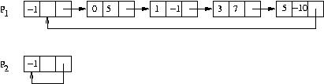

O objetivo desta tarefa é a implementação de um módulo polinomios.c que disponibiliza algumas operações sobre polinômios em uma variável. Cada polinômio é representado como uma lista ligada circular com nó cabeça, em que cada nó corresponde a um termo com coeficiente não nulo; os termos aparecem na lista em ordem crescente dos expoentes. Por exemplo, os polinômios:
P1 = -10x5 + 7x3 - x + 5e
P2 = 0 (identicamente nulo)seriam representados pelas listas:

O módulo está parcialmente pronto, particularmente a especificação da parte de interface (polinomios.h), acompanhada de comentários que descrevem a funcionalidade de cada rotina. As suas implementações no arquivo polinomios.c devem ser completadas. Elas estão declaradas de maneira a não causar erros de compilação e contêm, eventualmente, comandos provisórios de devolução de resultados. A fim de facilitar a depuração, a implementação da rotina ImprimePolinomio já vem completa.
O teste deste módulo é realizado pelo programa principal.c que é fornecido na íntegra. É um interpretador de comandos, sendo que cada comando testa geralmente uma das rotinas que manipulam os polinômios. O programa manipula até quatro polinômios, elementos de um vetor v. Cada comando do interpretador é representado por um caractere e eventuais argumentos. Não há diferença entre letras maiúsculas e minúsculas. Os significados dos comandos são:
C k v[k] recebe polinômio nulo; L k liberar espaço ocupado pela representação de v[k]; N k verificar se v[k] é nulo; T k e c inserir o termo (e,c) em v[k]; I k imprimir v[k]; S k m n v[k] recebe a soma de v[m] e v[n]; R k m e c v[k] recebe o produto de v[m] pelo termo (e,c); M k m n v[k] recebe o produto de v[m] e v[n]; H imprime resumo dos comandos; X ou Q encerra interpretação; # linha de comentário.
Os eventuais argumentos de cada comando podem ser seguidos de comentários. Note que o interpretador já está pronto! Após a compilação, a sua execução é invocada com o comando:
./principal < arqN.in > arqN.res
Os testes estão classificados em quatro grupos, sendo que cada grupo corresponde a um conjunto de rotinas, em ordem crescente de dificuldade:
Observações:
A soma dos polinômios deve seguir o mesmo paradigma do processo de intercalação, de acordo com os valores dos expoentes. Termos resultantes nulos não devem ser inseridos na resposta.
O produto de polinômios pode ser calculado como uma sucessão de somas de polinômios obtidos da multiplicação de um deles por cada termo do outro.
Numa multiplicação de dois termos, os expoentes são somados e os coeficientes são multiplicados.
Não use recursão.
Não é permitido modificar a interface (arquivo polinomios.h).
Se desejar, pode declarar rotinas auxiliares na parte marcada do arquivo polinomios.c.
A fim de facilitar a verificação de gerenciamento de memória dinâmica, é fornecido o pacote balloc que contém funções especiais para alocar e desalocar memória. Estas operações devem ser realizadas utilizando-se as funções (macros) MALLOC e FREE, em lugar das funções habituais malloc e free. O programa principal invoca, ao final da execução, a função bapply(bprint) que verifica se existe alguma área de memória dinâmica que deixou de ser liberada. Caso exista, é impressa a localização do comando que a alocou. A sua implementação não pode utilizar as operações habituais de alocação malloc e free.
As palavras em português impressas pelo programa polinomios.c usam codificação iso-8859-1 também conhecida como latin-1 (um byte por caractere).
O pacote tudo.zip contêm todos os testes e seus resultados, bem como os arquivos principal.c, polinomios.h e uma versão incompleta de polinomios.c, além do pacote balloc.
Deve ser submetido somente o arquivo polinomios.c.